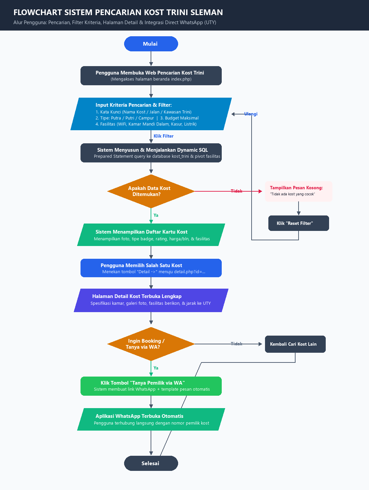

Format Gambar PNG Siap Pakai untuk Laporan Tugas & Presentasi
flowchart_pencarian_kost.png dan assets/images/flowchart_pencarian_kost.png. Kamu bisa langsung klik tombol download atau klik kanan pada gambar & pilih "Copy Image" / "Salin Gambar" untuk dipaste ke Word/PowerPoint.
